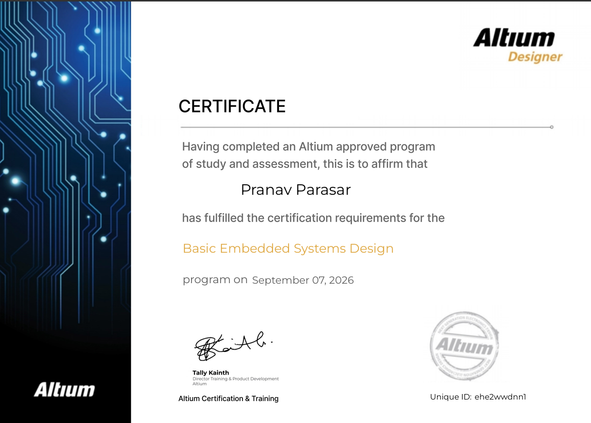
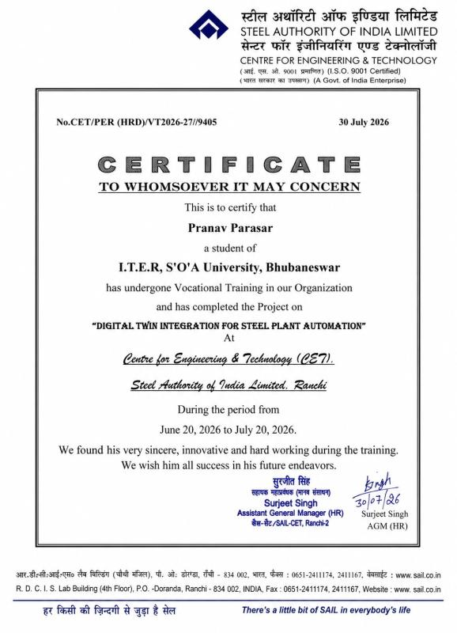

Programming
Java · Python · C++ · SQL · Data Structures & Algorithms · VHDL
Electronics & Communication Engineering student at ITER, S'O'A University, focused on embedded systems, FPGA design, signal processing, industrial automation and full-stack technologies.
I am an Electronics and Communication Engineering student at ITER, Siksha 'O' Anusandhan, with a strong interest in designing practical systems that combine electronics, computation and automation.
My work spans embedded systems, FPGA/VHDL, signal processing, MATLAB/Simulink, digital electronics, IoT and industrial automation, alongside web and software technologies such as Java, Python, C++, Node.js, MongoDB and AWS.
During my industrial training at Steel Authority of India Limited (SAIL), I worked around Digital Twin integration for steel plant automation, including PLC, SCADA, IoT-enabled acquisition and cloud analytics.
Java · Python · C++ · SQL · Data Structures & Algorithms · VHDL
Embedded Systems · FPGA · Digital & Analog Electronics · VLSI · Signal Processing
Digital Twin Systems · PLC · SCADA · IoT · Industrial Automation · Industry 5.0
MATLAB · Simulink · Multisim · AWS · Node.js · MongoDB · HTML/CSS
AI-focused web platform concept designed around fast, personalized answers and a modern conversational experience.
MATLAB preprocessing pipeline for noise removal and signal enhancement, with Pan-Tompkins based QRS and R-peak detection.
Dual-Tone Multi-Frequency decoder using frequency analysis for accurate keypad tone detection.
Multiplexed multi-digit display controller implemented on a BASYS-3 FPGA board with timing optimization.
Analog computing circuit using IC-555/op-amp building blocks and a low-cost automated tea dispensing system using NE555 and relay-operated pumps.
Developed an industrial automation framework around Digital Twin concepts, integrating PLC, SCADA, IoT-enabled data acquisition and cloud analytics for real-time process monitoring.


Vocational training · June 20 – July 20, 2026
Open Certificate ↗